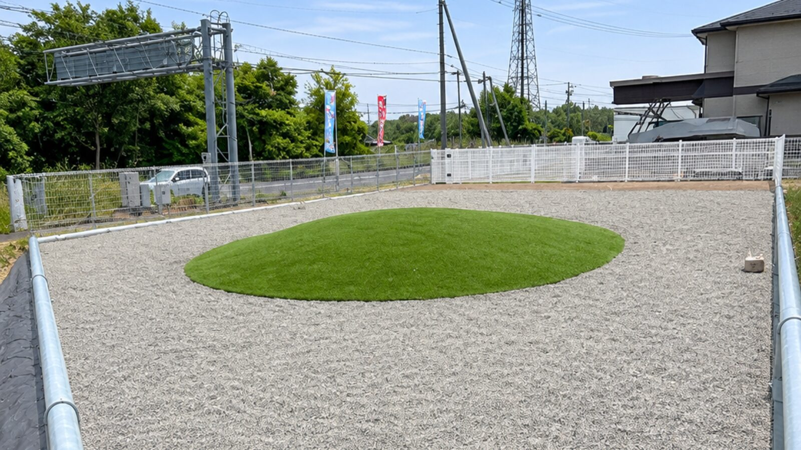
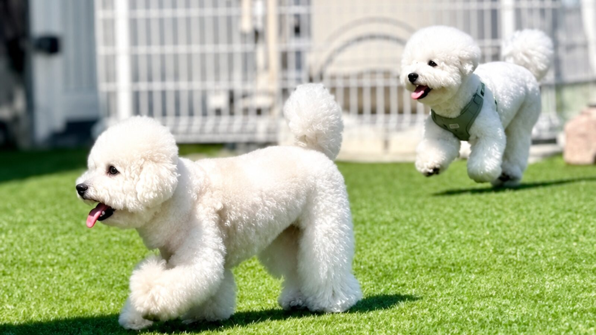
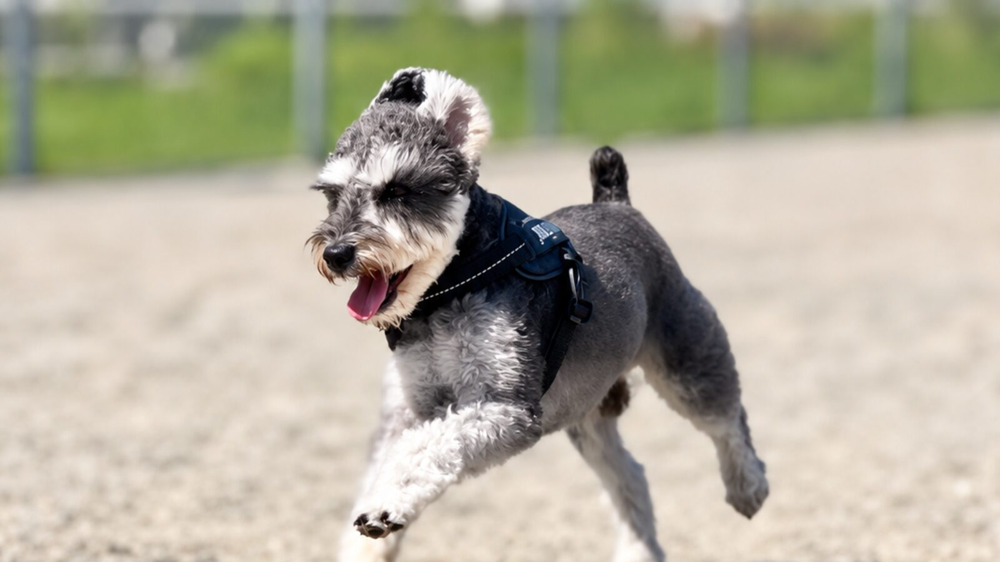
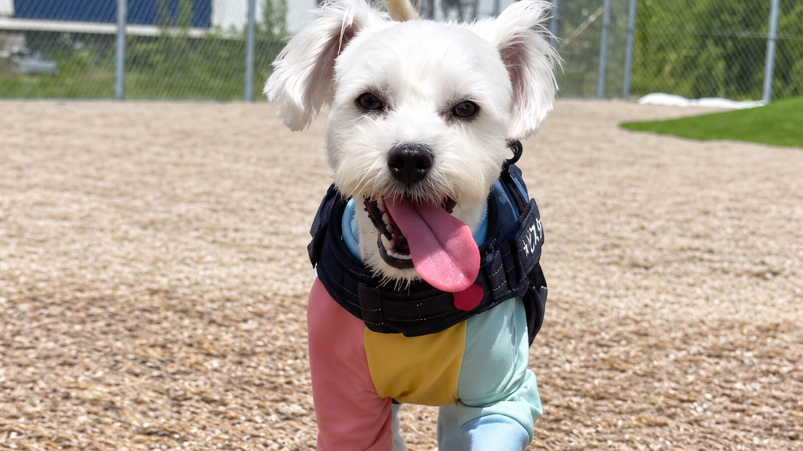
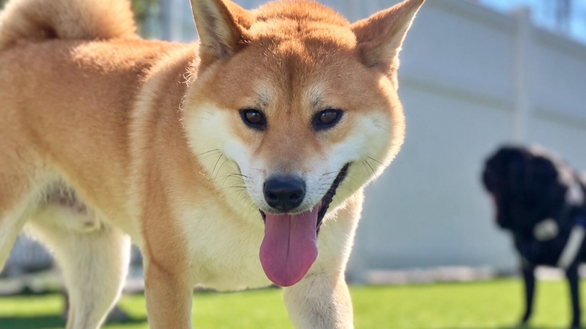

ドッグランDare
愛犬が思いきり走れる、苫小牧沼ノ端のドッグランです。
ドッグランDareは、北海道苫小牧市沼ノ端にあるドッグランです。小型犬エリア（人工芝）と大型犬エリア（焼き砂利）の2つのスペースをご用意しており、わんちゃんの大きさに合わせてのびのび遊んでいただけます。遊んだあとは、隣接して同時営業しているオヤツ屋さんDareでひとやすみもできます。
施設のご案内

小型犬エリア（人工芝）
人工芝のスペースです。小さなわんちゃんが思いっきり走れます。

大型犬エリア（焼き砂利）
焼き砂利のスペースです。足にやさしく、運動にぴったりです。

10:00〜18:00・毎日営業
毎日営業しています。雨天時は安全のためCLOSEDです。急なお休みはInstagramでお知らせしています。

オヤツ屋さんが隣接
遊んだあとは、隣で同時営業しているオヤツ屋さんDareでひとやすみできます。
| お電話 | 0144-57-4031 |
|---|---|
| 営業時間 | 10:00〜18:00 |
| 定休日 | 毎日営業（雨天休） ※雨天時は安全のためCLOSEDとなります。急なお休みはInstagramでお知らせしています。 |
| 広さ・区画 | のびのび遊べる2つのスペース ・小型犬エリア（人工芝） ・大型犬エリア（焼き砂利） 2つのエリアはゲートで仕切っていますので、大型犬のわんちゃんも安心してご利用いただけます。 |
| ご予約 | 通常のご利用はご予約不要です。 ただし貸し切りとバーベキュー貸し施設のご利用は事前のご予約が必要です。 |
| バーベキュー貸し施設 | バーベキューができる貸し施設をご用意しています。ご利用は事前のご予約が必要です。 |
ご利用料金
ご来場前に、料金とお支払い方法をご確認いただけます。
| ご利用プラン | 料金 | 備考 |
|---|---|---|
| 年会費 | 2,000円 | 初回、年1回 |
| 永久会員 | 5,000円 | — |
| 使用料 | 500円 | 2時間 |
| 貸し切り料金 | 10,000円 | 2時間・頭数要相談 |
| フリーパス6カ月 | 10,000円 | 2頭目から5,000円 |
| フリーパス1年 | 20,000円 | 2頭目から5,000円 |
| 回数券 6回 | 2,500円 | — |
| 回数券 12回 | 5,000円 | — |
通常のご利用にご予約は必要ありません。貸し切り・バーベキュー貸し施設のご利用は事前のご予約をお願いしています。貸し切りをご希望の場合、当日の頭数はご予約の際に確認させていただいております。
ご利用の流れ

ご来場
flow01通常のご利用はご予約なしでお越しいただけます。駐車場に停めていただき、受付までお越しください。（貸し切り・バーベキュー貸し施設のご利用のみ、事前のご予約をお願いしています。）

受付・ご利用条件の確認
flow02はじめての方は会員登録をお願いしています。年会費をお預かりし、ワクチン接種の状況をお伺いします。接種の内容が確認できるものがございましたら、ご持参ください。

ご利用開始
flow03エリア内でリードを外していただけます。ほかのわんちゃんの様子を見ながら、ゆっくりお過ごしください。回数券やフリーパス、永久会員もご用意しています。

お帰り
flow04お帰りの際は受付までお声がけください。おみやげのおやつもお選びいただけます。
よくあるご質問
予約は必要ですか？
通常のご利用にご予約は必要ありません。営業時間内にそのままお越しください。
ただし貸し切りとバーベキュー貸し施設のご利用は、事前のご予約をお願いしています。
ワクチン接種証明書は必要ですか？
会員登録をされる際に、ワクチン接種の状況をお伺いしています。接種の内容が確認できるものがございましたら、ご準備ください。ご不明な点は受付でお声がけください。
大型犬も利用できますか？
はい、ご利用いただけます。小型犬エリア（人工芝）と大型犬エリア（焼き砂利）の2つのスペースをご用意しており、2つのエリアはゲートで仕切られていますので、大きさの違うわんちゃん同士が急に一緒になることはありません。大型犬エリアの焼き砂利は足にやさしく、運動にぴったりです。
貸し切りはできますか？
貸し切りは2時間10,000円で承っています。貸し切りは事前のご予約が必要です。当日の頭数はご予約の際に確認させていただいております。
雨の日や冬季も利用できますか？
雨天時は安全のためCLOSEDとなります。急なお休みはInstagram（@dogrundare）でお知らせしています。
アクセス
オヤツ屋さんDareと同じ場所で、同時に営業しています。

ドッグランDare
北海道苫小牧市沼ノ端中央1丁目2-24